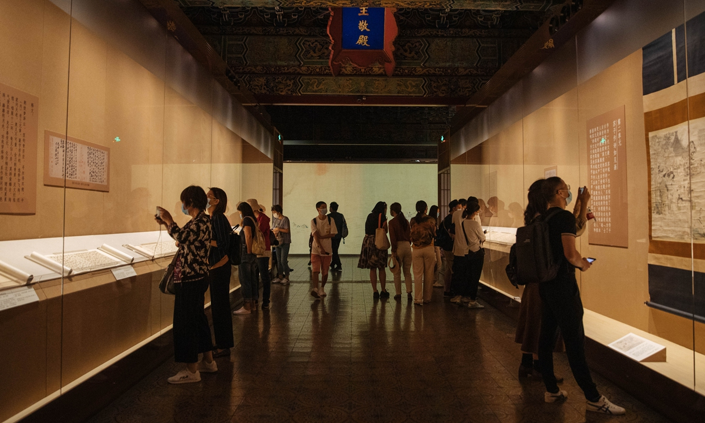

北京故宮於明成祖永樂四年（1406年）開始建設，以南京故宮為藍本營建，到永樂十八年（1420年）建成，從明成祖至清遜帝溥儀1924年遷出，成為明清兩朝二十四位皇帝的皇宮。（1925年10月10日）故宮博物院正式成立開幕，紫禁城佔地72萬平方米，建築面積約15萬平方米，為世界上現存規模最大的宮殿建築。

北京故宮內的建築分為外朝和內廷兩部分。外朝的中心為太和殿、中和殿、保和殿，統稱三大殿，是國家舉行大典禮的地方。三大殿左右兩翼輔以文華殿、武英殿兩組建築。
內廷的中心是乾清宮、交泰殿、坤寧宮，統稱後三宮，是皇帝和皇后居住的正宮。其後為御花園。後三宮兩側排列着東、西六宮，是后妃們居住休息的地方。東六宮東側是天穹寶殿等佛堂建築，西六宮西側是中正殿等佛堂建築。外朝、內廷之外還有外東路、外西路兩部分建築。
雖然有部分清宮舊藏文物於1948到1949年遷往臺北故宮，但通過收回溥儀私帶出宮的珍品，接受民間捐贈，並參與考古發掘，故宮博物院在1949年以後進一步豐富了館藏，“故宮博物院”院藏文物體系完備、涵蓋古今、品質精良、品類豐富。現有藏品總量已達180餘萬件（套），以明清宮廷文物類藏品、古建類藏品、圖書類藏品為主。藏品總分25種大類別，其中一級藏品8000餘件（套），堪稱藝術的寶庫。

【張擇端清明上河圖卷】北宋，張擇端作，絹本，淡設色，縱24.8厘米，橫528厘米。中國十大傳世名畫之一，採用散點透視構圖法，生動記錄了中國十二世紀北宋汴京的城市面貌和當時社會各階層人民的生活狀況。是汴京當年繁榮的見證，也是北宋城市經濟情況的寫照。在五米多長的畫卷裡，共繪了814個各色人物，牛、騾、驢等牲畜73匹，車、轎二十多輛，大小船隻二十九艘。房屋、橋樑、城樓等各有特色，體現了宋代建築的特徵。有較高的歷史價值和藝術價值。
【平復帖】西晉陸機的《平復帖》是故宮法帖的代表作品，是中國書法史上傳世名家法帖中年代最早的一件，書寫年代距今已超過1700年。原帖高23.7厘米，寬20.6厘米，它用禿筆寫於麻紙之上，筆意婉轉，風格平淡質樸，其字體為草隸書。其見證了漢字流變。它一方面是隸書發展過程中的標本，同時更是漢字由隸書向楷書過渡的重要佐證。

【乾隆款金甌永固杯】高12.5厘米，口徑8厘米，足高5厘米，口邊刻有迴紋。根據清“內務府活計檔”記載，乾隆皇帝對此杯的製作十分重視，不僅調用內庫黃金、珍珠、寶石等珍貴材料，而且精工細作，曾多次修改，直至皇帝滿意為止。因此，該杯一直被清代皇帝視為珍貴的祖傳法寶。「金甌」寓意國家政權，取名「金甌永固」則反映了清朝統治者希冀永遠鞏固地保持政權的一種願望。